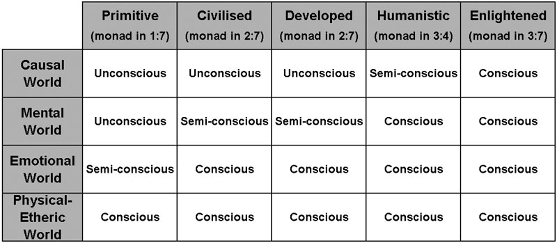
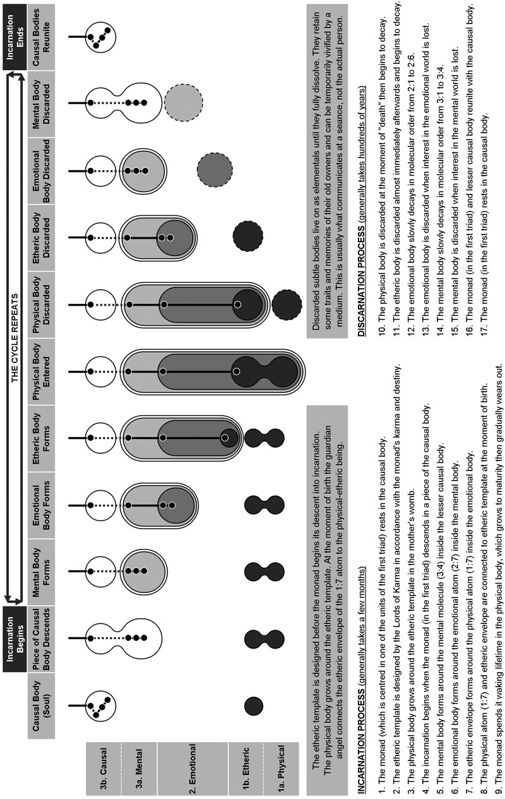

Reincarnation is the
belief that a part of
our consciousness will
continue living after
the death of the
physical body and will
be re-born into a new
body here on Earth. The
belief of reincarnation
is widespread, in fact
almost universal in the
East, but it has never
been that popular in the
West. This is due to the
scepticism of mainstream
science and the fact
that it is not really
mentioned in the
Christian Bible.
However, times are
slowly changing and more
and more reputable
doctors and scientists
are now investigating
aspects of
reincarnation, including
past life regression,
near-death experiences
and after-death
communication. These
phenomena were briefly
described in Chapter 2
and the mechanisms
behind them are
explained in the next
chapter.
For many people the idea
of life after death is
very comforting because
it lessens their grief
and removes their fear
of annihilation. For
others it is a subject
that is never
contemplated because
"ignorance
is bliss".
But whether we believe
in it or not, the fact
remains that life after
death is a certainty
because life cannot be
extinguished – it only
changes form. Death is
an unsuitable term for
passing on to a higher
form of life because the
self/monad cannot die –
ever! The bodies of
incarnation are
discarded when they are
no longer required, but
the monad is immortal.
To the monad, each
incarnation is like a
day’s work. Leaving the
physical-etheric body
behind can be compared
to taking off our
overcoat, leaving the
emotional body behind is
like taking off our
clothing, and leaving
the mental body behind
is like taking off our
underwear. We return to
our causal body (soul)
completely naked to
sleep for a while before
awakening the next
morning to get dressed
again for another day’s
work. We begin each new
incarnation by putting
on our underwear (mental
body), our clothes
(emotional body) and our
overcoat (physical-etheric
body). After a long hard
day at work we are tired
and our overcoat is worn
out, so we take it off
and head back home to
sleep.
Continuity of
Consciousness
If we have all lived
before, why can’t we
remember anything of our
previous lives? There
are two reasons why the
average person cannot
consciously recall their
past lives:
-
After
each incarnation,
the subtle bodies of
our persona dissolve
in sequence over the
course of many years
so the pathways to
their memories are
lost to us. New
subtle bodies are
formed for each new
incarnation but they
have no connection
with our previous
lives, so
essentially we are a
new persona in each
lifetime.
-
Only
the greater causal
body (or soul) is
ours for our entire
journey through the
human kingdom. It is
the storehouse of
our experiences in
the human kingdom
and contains the
memories of all our
human incarnations.
However, the average
person does not
incarnate with his
greater causal body
so cannot access
those memories. The
lesser causal body
contains causal
matter (soul
essence) from the
greater causal body,
but the memories,
knowledge and
abilities it
contains are
incoherent and our
conscious minds
don’t know the
mental pathways that
are required to
recall them.
Only an enlightened
person incarnates with
their greater causal
body and therefore has
continuity of
consciousness from life
to life. Non-enlightened
people fall asleep at
some point during their
ascent back to their
soul and wake up at the
same point as they
descend into a new
incarnation. Figure 13a
shows the point at which
this occurs:

Figure 13a –
Degrees of Consciousness
in the Subtle Worlds
Life Cycle
Figure 13b provides an
overview of the entire
life cycle from
incarnation to
discarnation. The
process specifically
applies to
non-enlightened human
monads, i.e. the
primitive, civilised,
developed and humanistic
stages of development.
With regard to
enlightened human
monads, the same general
process applies, except
that the causal body
does not divide itself
into two parts at the
start of the
incarnation. Enlightened
human monads incarnate
with their entire causal
body, which gives them
continuity of
consciousness between
incarnations.
Before Incarnation
The average time between
incarnations is 5 years
at the primitive stage,
300 years at the
civilised stage, 1000
years at the developed
stage, 1500 years at the
humanistic stage and
0-3000 years at the
enlightened stage, but
there are no set rules.
Most people reincarnate
automatically when the
"thirst"
for physical experience
awakens them from their
dream-like state, but
more advanced
individuals have more
control over the timing
of their incarnations.
For example, a
humanistic person’s
"afterlife"
is typically 1000 to
2000 years, but they may
choose to reincarnate
almost immediately.
The monad’s state of
consciousness in the
different subtle worlds
depends on which unit of
the triad it is centred.
Full consciousness is
only possible in the
world that corresponds
to the permanent atom in
which the monad is
centred, and the worlds
below. For example, a
typical civilised person
whose monad is centred
in the emotional atom
(2:7) has full objective
consciousness in the
emotional world,
dream-like subjective
consciousness in the
mental world and is
unconscious in the
causal world, as can be
seen in Figure 13c.

Figure 13b – The Cycle
of Reincarnation

Figure
13c – Years in the
Subtle Worlds at the End
of an Incarnation
As stated in Chapter 10,
if the planetary
conditions or level of
civilisation are not
optimal for the monad’s
development the time
spent in the causal
world can be
significantly longer
than stated above. Life
on Earth passes through
repeating cycles with
different conditions to
suit the development of
monads at different
levels of development.
If conditions are
suitable for the monad
then the length causal
life will be close to
the times stated above,
but if conditions are
unsuitable the monad
will
"sleep"
in the greater causal
body until conditions
become conducive, which
may be thousands or
millions of years.
Remember that time
passes much faster in
the higher worlds, so
thousand Earth years may
pass in a single day. |